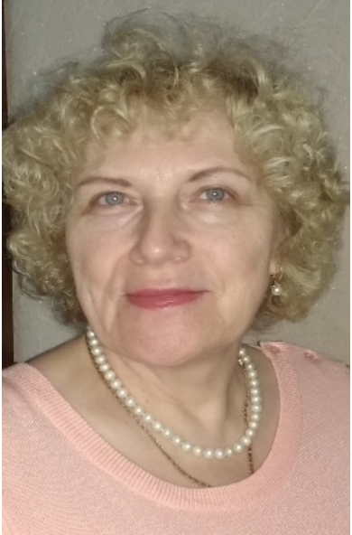
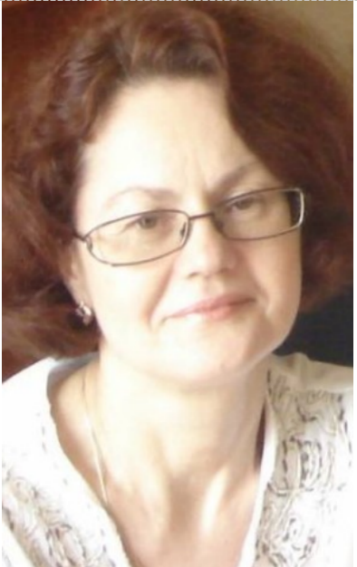
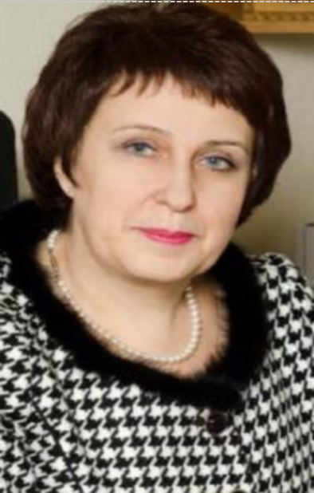
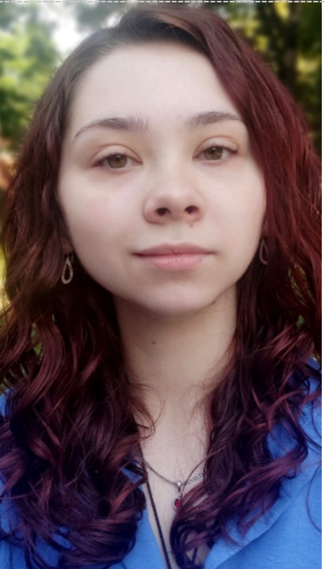
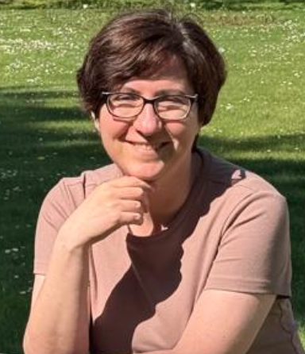
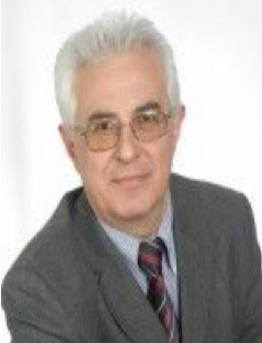

Українська спілка германістів вищої школи
Офіційний сайт
Офіційний сайт
Українська спілка германістів вищої школи є професійним об'єднанням викладачів і дослідників німецької мови, літератури та культури. Метою Спілки є розвиток германістичних досліджень в Україні, сприяння міжнародній співпраці, організація наукових конференцій, семінарів та підтримка академічних контактів.
проведення конференцій
організація наукових семінарів
міжнародне співробітництво
підтримка молодих науковців





